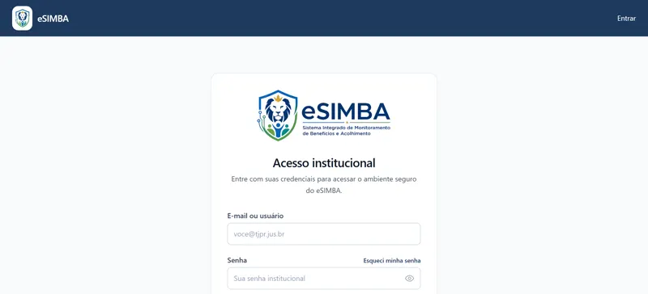
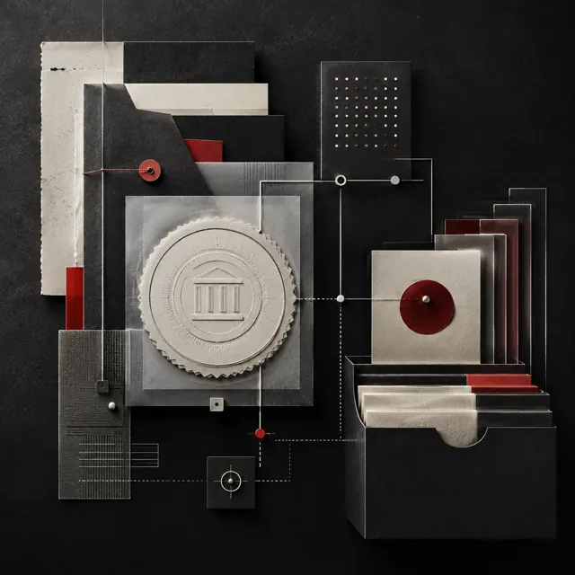
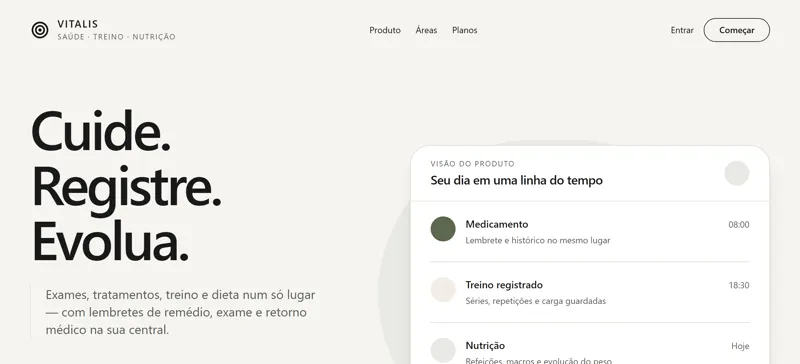
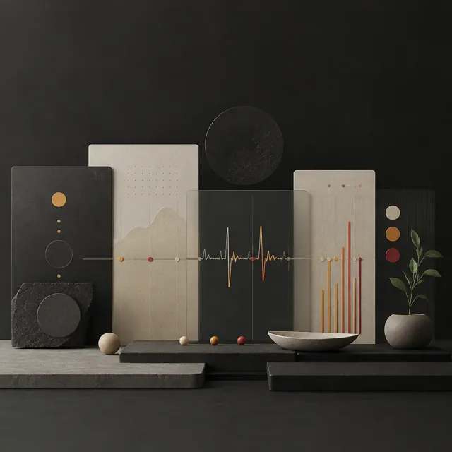
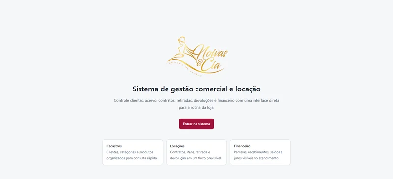
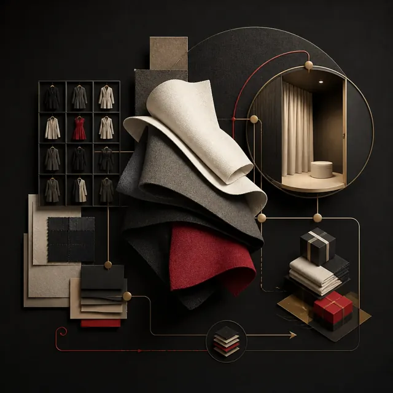

Ações
A ação principal é uma pílula amarela chapada; a secundária, um contorno neutro. Sem wipe: o hover escurece o preenchimento um degrau.
Caderno Noturno: azul-noite, amarelo de ação, Archivo nos títulos e Geist no texto. É o mesmo sistema do ProfessorDash, aqui no tema noturno. Este catálogo demonstra a fonte canônica em ../assets/css/style.css e documenta os padrões que devem ser reutilizados no portfólio, em projetos e em peças da marca.
O monograma TC foi desenhado à mão, não composto com uma fonte. O corte do T acompanha a curva externa do C e deixa entre as letras uma fenda curva de largura constante. T e C têm a mesma espessura de traço, e é essa espessura única que faz o par ler como um sinal só.
Todas as provas desta página carregam os arquivos que o site usa. O catálogo não guarda uma cópia do desenho: se a marca mudar no assets/, muda aqui junto. Os caminhos são os mesmos do ProfessorDash (static/logo.svg), sem redesenho.
Unidades relativas à altura do monograma, que vale 80. O desenho original é de 142,5 × 80 mm.
O desenho não tem corte óptico próprio: a fenda de 7,5 unidades continua aberta em 16 px. Abaixo de 24 px de altura, use o selo, que põe o monograma sobre o campo noturno do cabeçalho.

O respiro mínimo em toda a volta é a altura da travessa do T. O lockup horizontal não desce de 160 px de largura; abaixo de 24 px de altura, use o selo.
Use assets/logo.svg e assets/favicon.svg. Não redesenhe o monograma a partir da Archivo: o corte curvo do T e a fenda concêntrica ao C não existem em fonte nenhuma.
O T troca de cor por prefers-color-scheme. Numa superfície escura fora deste site, a página precisa declarar color-scheme: dark; sem isso, quem estiver com o sistema no claro recebe um T #16181d sobre fundo escuro.
A altura da travessa do T em toda a volta. Nada entra nessa faixa: nem texto, nem borda, nem outra marca.
O C é sempre #ffd43b, inclusive sobre papel. Não tinja o T, não aplique gradiente e não troque o amarelo por outro tom.
O portfólio e o ProfessorDash usam o mesmo desenho. Uma mudança na marca é feita nos dois repositórios no mesmo dia, ou eles deixam de assinar como a mesma pessoa.
O desenho vem do arquivo vetorial do Toni (CorelDRAW), convertido sem redesenho. Qualquer alteração começa nele e desce para os dois SVG.
Azul-noite e amarelo na identidade; verde, âmbar e vermelho só como estado. Os nomes semânticos são públicos; os aliases curtos (--ink, --panel, --signal…) continuam disponíveis para os componentes existentes e apontam para os valores novos.
#000.Archivo 800 dá peso à assinatura e aos títulos, em caixa de frase. Geist é a voz da interface e do texto corrido. JetBrains Mono fica para código, medidas e rótulos curtos em caixa alta. O tamanho escala com clamp() para preservar ritmo entre 320px e monitores largos.
.d-megaAutoria.d-xlSistemas.d-lgProjetos que funcionam..d-mdPrecisão visual..d-smInteligência aplicada.body-mdTexto de leitura em Geist, com medida confortável e contraste estável..body-smDescrição, legenda ou contexto para acompanhar uma decisão..mono-xsRótulo curto · 2026A escala de espaçamento reduz decisões isoladas. Use os passos para agrupar conteúdo, separar blocos e criar pausas de seção. Raios maiores pertencem a superfícies; a pílula é de botões, chips e navegação.
--space-14px--space-28px--space-312px--space-416px--space-624px--space-832px--space-1248px--space-1664px--radius-controlCampos e mensagens
--radius-surfaceCards e superfícies
--radius-emphasisBlocos destacados
--radius-mediaMídia e recortes
Os exemplos abaixo são os mesmos componentes consumidos pelo portfólio. Componha a partir deles antes de criar uma nova variação; o estado deve comunicar a ação, o foco ou o resultado sem depender apenas da cor.
A ação principal é uma pílula amarela chapada; a secundária, um contorno neutro. Sem wipe: o hover escurece o preenchimento um degrau.
Chips classificam ou mostram status curto. O de destaque é tingido, não preenchido, para não disputar com a ação. Para links, preserve o alvo mínimo de 44px.
Uma superfície agrupa informação relacionada e responde com elevação curta quando carrega interação. Sem brilho nem fio de luz no topo.
Borda discreta, contraste suficiente e espaço para o conteúdo respirar.
O padrão de fase organiza uma categoria, seu título, contexto e itens de suporte.
Reúna conteúdo que compartilha uma mesma decisão.
Feedback distingue sucesso, atenção e erro por texto, cor e contexto. Vermelho é reservado ao erro.
Rótulos nomeiam o dado, o placeholder apenas orienta e o erro explica como recuperar.
Quando uma tela precisa mostrar muitas imagens, a grade cansa antes da terceira fileira. Este componente põe as fichas num anel: a da frente tem autoridade, as de trás recuam e escurecem, e o conjunto responde ao arrasto, à roda horizontal e às setas do teclado. Sem JavaScript ou sob movimento reduzido, o mesmo bloco continua sendo um trilho legível com todas as imagens presentes.







Superfícies com seis imagens ou mais que compartilham um mesmo assunto: telas de um produto, capas de uma coleção, registros de uma turma. Abaixo de seis fichas o anel não fecha e uma grade comum comunica melhor.
Copie o bloco GALERIA EM ARCO de assets/css/style.css e o arquivo assets/js/gallery.js. O script não depende de main.js, não tem etapa de compilação e liga sozinho em qualquer elemento com data-gallery.
O bloco precisa de [data-gallery-stage], [data-gallery-track] e uma ficha por item. data-gallery-title nomeia a ficha na região viva; sem ele, o alt da imagem assume. Os controles são opcionais e reconhecidos por [data-gallery-prev], [data-gallery-next] e [data-gallery-status].
O anel é progressivo: o CSS declara o trilho e o script acrescenta .is-live. Toda imagem precisa de alt real, porque o estado sem script é o que sobra quando o resto falha.
Sob prefers-reduced-motion nenhum quadro é agendado: o componente permanece no trilho e os botões passam a rolá-lo. A deriva também para enquanto o foco está dentro do palco.
Um único laço serve todas as galerias da página e só acorda quando alguma está visível e a aba está ativa. Fora da tela o anel desliga; ao voltar, um IntersectionObserver o reacende.
O sistema serve para reduzir escolhas arbitrárias e manter a autoria reconhecível em cada ponto de contato.
Use uma cor, passo de espaço, raio, escala tipográfica e curva de motion existentes antes de criar um valor novo.
O amarelo marca a ação, o numeral e a marca. Rótulos curtos nunca vão na cor de ação, e o vermelho só aparece quando algo deu errado.
Entradas usam opacidade e deslocamento curto, sem desfoque nem recorte animado. Nada de lavagem radial, luz que segue o ponteiro ou fio colorido no topo de cartão.
Superfícies apoiam projetos, dados e decisões. Não envolva informação em cards apenas para preencher uma grade.
Toda interação precisa considerar hover, foco, desabilitado, carregamento, erro, sucesso e movimento reduzido.
Preserve leitura, foco e alvos de toque em telas pequenas. A composição pode mudar; a informação não pode desaparecer.
Tokens e componentes vivem em assets/css/style.css. Esta página demonstra e explica; não duplica estilos.